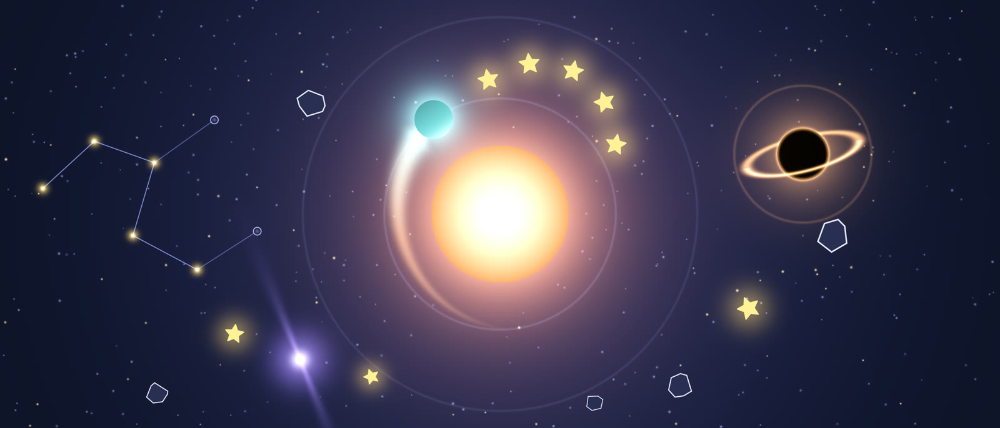

Sungrazer
Press kit
Press kit
Your planet orbits a blazing sun. Hold to dive toward it, release to swing away. Graze the sun and get out alive to multiply your stars, but stay too long in its heat and you burn.
Sungrazer on the App Store →Trailer, 30 s, 1920×1080, 60 fps: English · French. The trailer's music is “Battle Time” by Lesiakower (Pixabay). The game's own music and sounds are original, synthesized in the game: recording your own gameplay is safe on YouTube and Twitch.
| Developer | Mourad Toumi, solo developer, France |
|---|---|
| Release | November 24, 2026 |
| Platform | iPhone, iOS 18 or later (runs on iPad as an iPhone app) |
| Price | Free. An ad shows at most once every five runs, never during play. No in-app purchases. |
| Languages | English, French |
| Genre | One-finger arcade, score attack |
| Rating | 4+ |
| Account | None. No tracking. |
Sungrazer is a one-finger arcade game about flying as close to a sun as you dare. The closer you fly, the more you score: graze the sun and escape to multiply your stars ×2, even ×3. Runs are short and restarts are instant.
1320×2868 PNG. Tap a screenshot for the full size.

All of this may be used freely in articles and videos about the game.
Ta planète tourne autour d'un soleil brûlant. Maintiens pour plonger vers lui, relâche pour t'éloigner. Frôle le soleil et ressors vivant pour multiplier tes étoiles ×2, voire ×3 ; reste trop longtemps dans sa chaleur et tu brûles. Sorti sur iPhone le 24 novembre 2026, gratuit, en français et en anglais : une publicité au plus toutes les cinq parties, jamais pendant le jeu.
Bande-annonce en français · dossier d'images (captures en français incluses). Tout peut être repris librement dans des articles et vidéos sur le jeu.
Mourad Toumi — mouradski@icloud.com. Happy to answer questions or send footage in another format.